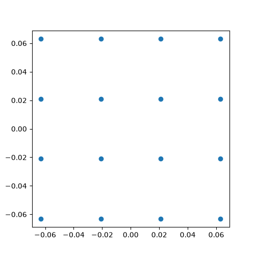
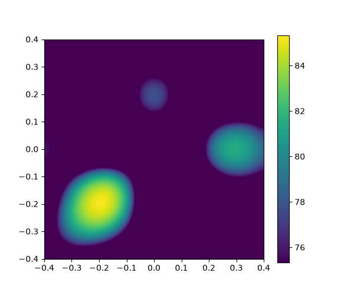
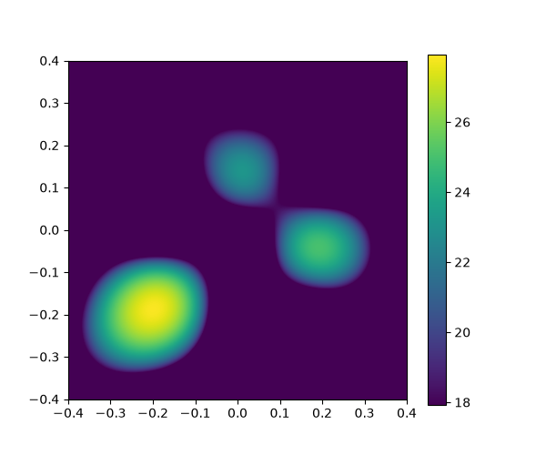
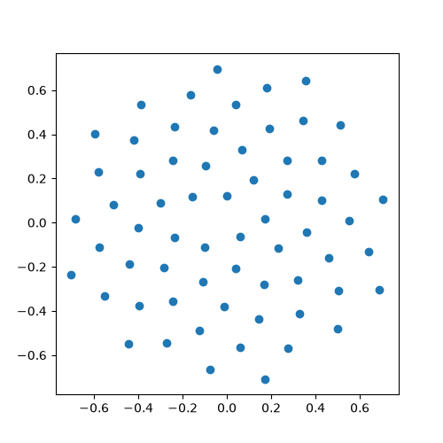
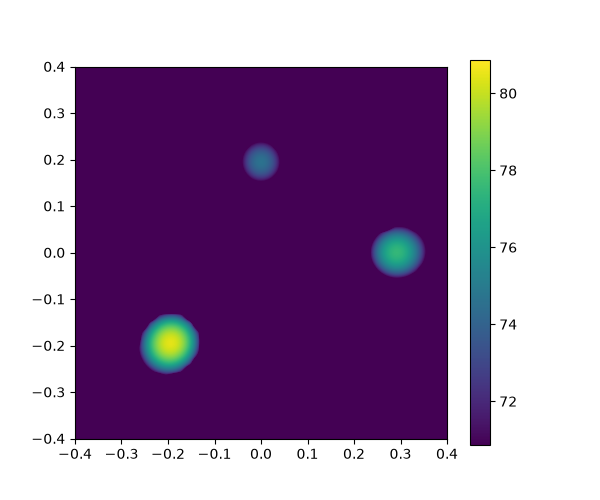
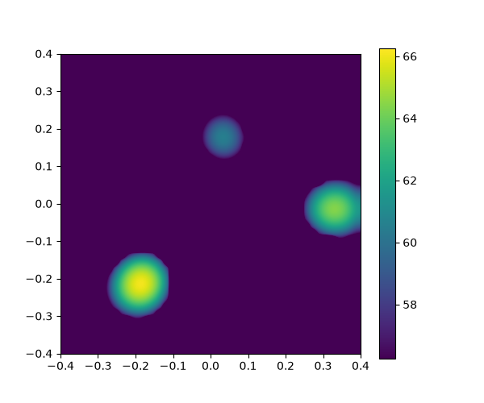

Validating Three-Source Localization with Real Microphone Arrays
An experimental simulation to measurement comparison using a compact UMA-16 and a large-aperture 64-microphone Vogel spiral array
Acoular’s Getting Started – Part 1 provides the frequency-domain beamforming workflow, while the example Three sources – Generate synthetic microphone array data provides the method used to create the three-source reference data. Here, both are adapted to laboratory measurements with two different microphone arrays.
Can the simulated spatial pattern be recovered experimentally? To answer this question the scene was reproduced with three loudspeakers driven by independent white-noise signals and measured successively with a UMA-16 and a 64-microphone Vogel spiral array. SpectAcoular’s Microphone Array Measurement App recorded the multichannel time data, and Acoular produced the conventional frequency-domain beamforming maps. For each array, the measured map was compared with a reference simulation using the same geometry, scan plane and analysis frequency.
Simulation method used as reference
The synthetic reference data were generated by adapting Acoular’s Three sources – Generate synthetic microphone array data example. The original example creates three independent white-noise point sources and writes the resulting microphone signals to HDF5. Its relative source-amplitude scale (1.0, 0.7, 0.5) was retained in the adapted simulations.
Two elements were adapted. First, the original array64 microphone geometry was replaced by the geometry of the array being evaluated: the UMA-16 for the first comparison and the 64-microphone Vogel spiral for the second. Second, the three source coordinates were adjusted primarily through uniform scaling to match the physical aperture and scan window of each experimental setup while preserving their triangular arrangement and relative directions. A separate synthetic data set was therefore generated for each array. These array specific simulations were then processed with the frequency domain workflow from Getting Started with Acoular – Part 1.
Experimental principle
The reference Three sources simulation uses ideal point sources. In the laboratory, each source was replaced by a loudspeaker with a diameter of 8 cm. Their positions were defined relative to the center of the microphone array, with the array lying in the plane \(z=0\):
| Source | \(x\) (m) | \(y\) (m) | \(z\) (m) |
|---|---|---|---|
| 1 | -0.20 | -0.20 | 0.60 |
| 2 | 0.30 | 0.00 | 0.60 |
| 3 | 0.00 | 0.20 | 0.60 |
Unlike a point source, a real loudspeaker occupies physical space. The complete source layout was therefore scaled by a factor of two relative to the reference Three sources simulation: both the lateral source coordinates and the source-to-array distance were doubled. This provided sufficient space for the 8 cm loudspeakers and their supports. Because every source distance was scaled by the same factor, the ratios \(x/z\) and \(y/z\) remained unchanged, preserving the source directions and the triangular topology of the reference scene.
Measurement hardware and software
The UMA-16 experiment was run on a Raspberry Pi Compute Module 5 (CM5), and the complete measurement proceeded reliably without any issues. For the 64-microphone Vogel spiral array, all microphone channels were acquired simultaneously with a 64-channel SINUS Tornado system.
The software environment was managed with uv. The workflow used Acoular 26.4 for beamforming, SpectAcoular 26.4 for acquisition with the Microphone Array Measurement App, and sounddevice 0.5.5 for multichannel playback. The uv version is 0.11.25, and the Raspberry Pi runs Linux 6.18.33+rpt-rpi-2712 under Debian GNU/Linux 13.5 (Trixie). These versions were used throughout the experiments and the subsequent analysis.
Generating three independent broadband sources
A different random white-noise sequence was generated for each playback channel with the sounddevice library. The first three output channels drove the three loudspeakers; the remaining channels were silent. Because each column is generated independently by numpy.random.randn, the three source signals are statistically uncorrelated.
Playback lasted 60 s at 48 kHz. After normalization by the largest value, the three non-zero channel weights retain the relative amplitude scale 1.0, 0.7 and 0.5 used in the synthetic-data example. These weights describe electrical drive amplitudes, not calibrated sound-pressure levels at the loudspeaker positions.
import numpy as np
import sounddevice as sd
device_id = 0
sample_rate = 48000
duration = 60
channels = 8
print(sd.query_devices()) # allow to know the device_id used
volumes = np.array([0.075, 0.150, 0.105, 0, 0, 0, 0, 0])
samples = int(sample_rate * duration)
audio = np.random.randn(samples, channels).astype(np.float32)
audio = audio * volumes
print("Playing noise")
sd.play(audio, samplerate=sample_rate, device=device_id)
sd.wait()
print("End")Measurement chain and calibration
SpectAcoular’s Microphone Array Measurement App stored the microphone signals as HDF5 time histories. Before acquisition, all microphones were calibrated with a reference acoustic calibrator to ensure consistent channel weighting. Without this correction, sensitivity differences could be interpreted by the beamformer as spatial level differences.
Four HDF5 data sets support the two simulation to measurement comparisons. For each array, one file contains the adapted synthetic microphone signals and the other contains the calibrated laboratory measurement:
raw data/three_sources_uma16_simulated.h5— simulated data generated with the UMA-16 geometry;raw data/three_sources_uma16_measured.h5— laboratory measurement with the UMA-16;raw data/three_sources_vogel64_simulated.h5— simulated data generated with the Vogel geometry;raw data/three_sources_vogel64_measured.h5— laboratory measurement with the 64-microphone Vogel array.
First measurement: UMA-16 miniDSP
The first measurement used the 4 × 4 UMA-16. Its small aperture limits spatial resolution at low frequencies, so the 7 kHz third-octave band was selected from the broadband recording to separate the three source directions.

Figure 1. First laboratory setup: three loudspeakers facing the compact UMA-16.

Figure 2. Planar 4 × 4 geometry of the UMA-16.
UMA-16 result at 7 kHz
At 7 kHz, the measured map recovers the three sources and their triangular arrangement. However, the maps are not identical: the peaks are slightly shifted, and their shapes and relative levels differ. These differences may result from the finite size of the loudspeakers, positioning uncertainty, room reflections and the UMA-16’s limited aperture. Because the two maps use different decibel scales, the comparison concerns source localization rather than absolute levels.

(a) Simulated map at 7 kHz.

(b) Measured map at 7 kHz.
Figure 3. Side-by-side comparison of the simulated and measured UMA-16 maps at 7 kHz, both displayed over a ±0.4 m scan window.
Second measurement: 64-microphone Vogel spiral array
The second measurement used 64 calibrated microphones arranged as a planar Vogel spiral. Its substantially larger aperture provides greater spatial discrimination at lower frequencies. The sources were located 0.6 m from the array plane, and the scan grid covered \(-0.4 \leq x,y \leq 0.4\) m.

Figure 4. Scaled three-source scene in front of the 64-microphone Vogel spiral array.

Figure 5. Measured coordinates of the planar 64-microphone Vogel spiral array.
Vogel-array result at 2.5 kHz
At 2.5 kHz, both maps show three compact maxima near the prescribed coordinates: one in the lower-left quadrant, one near the positive \(x\) axis and one above the center. The Vogel array therefore resolves the same spatial pattern at a substantially lower frequency than the UMA-16.

(a) Simulated map at 2.5 kHz.

(b) Measured map at 2.5 kHz.
Figure 6. Side-by-side comparison of the simulated and measured maps at 2.5 kHz using the 64-microphone Vogel geometry.
Observations
Three practical lessons emerge from the comparison:
- Array aperture determines the useful frequency range. The UMA-16 requires a higher analysis frequency to separate the sources, whereas the larger Vogel array provides useful spatial discrimination at 2.5 kHz.
- Frequency selection is a compromise. Increasing frequency narrows the main lobe of a compact array, but it also increases the risk of spatial aliasing when the microphone spacing becomes large relative to the wavelength.
- Measured and simulated maps will not be identical. Reflections, loudspeaker directivity, background noise and finite recording duration broaden or distort measured maxima but are absent or idealized in the simulation.
Conclusion
The Acoular three-source workflow was successfully transferred from simulation to two laboratory microphone arrays. The UMA-16 recovered the three-source arrangement at 7 kHz, while the larger Vogel array recovered it at 2.5 kHz with more precise results.
Together, these results show that the complete workflow can localize the three real sources, from multichannel excitation and microphone acquisition to frequency-domain acoustic imaging. They also show that the Three sources synthetic-data method and the Part 1 processing chain can be adapted to different microphone arrays by using the geometry and processing parameters of each experiment.